From log
to board.
Scroll to walk the sixteen-station production line — the exact journey every board takes through our facility.
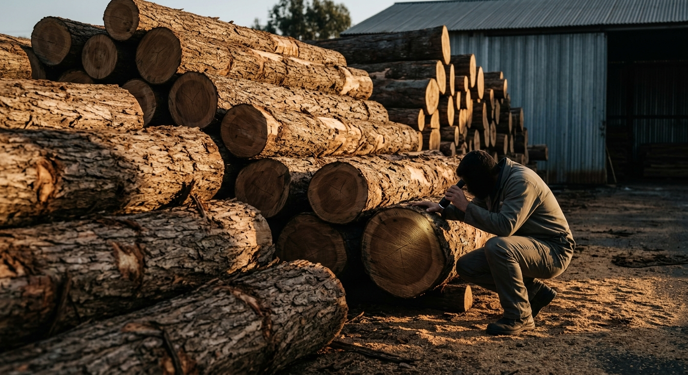
Log Selection
Manual · Trained gradersEvery batch begins in the timber yard, where our graders inspect each hardwood log by hand — checking girth, straightness, density and freedom from knots, splits and decay. Only logs that pass this first human checkpoint ever reach the line.
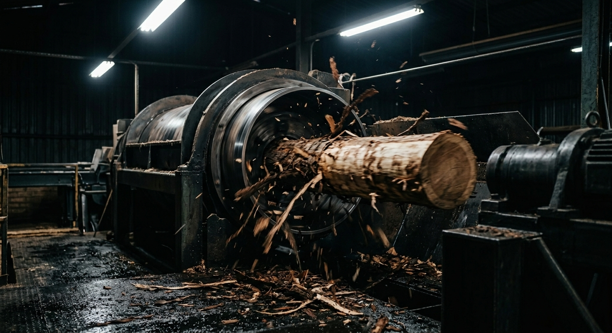
Debarking
Machine · DebarkerSelected logs pass through the rotary debarker, which strips away bark, grit and embedded stones in one clean rotation. A clean log protects the peeling knives downstream and exposes the true timber surface for inspection.
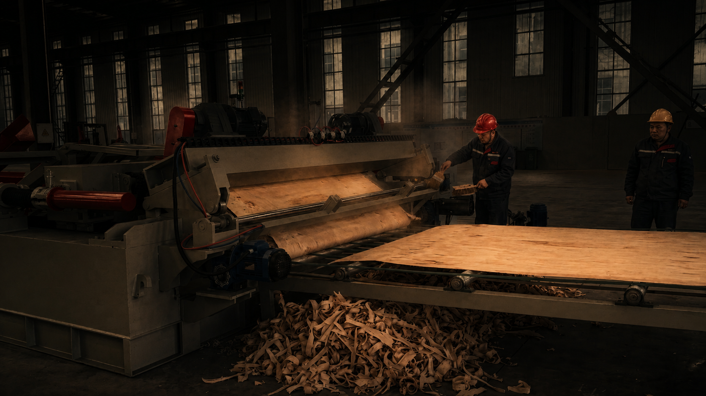
Peeling
Machine · Spindle-less peelerThe log spins against a precision knife and literally unwinds — coming off as one continuous ribbon of veneer. Because the machine is spindle-less, it peels the log down to a slim core, recovering far more timber from every log than conventional lathes.
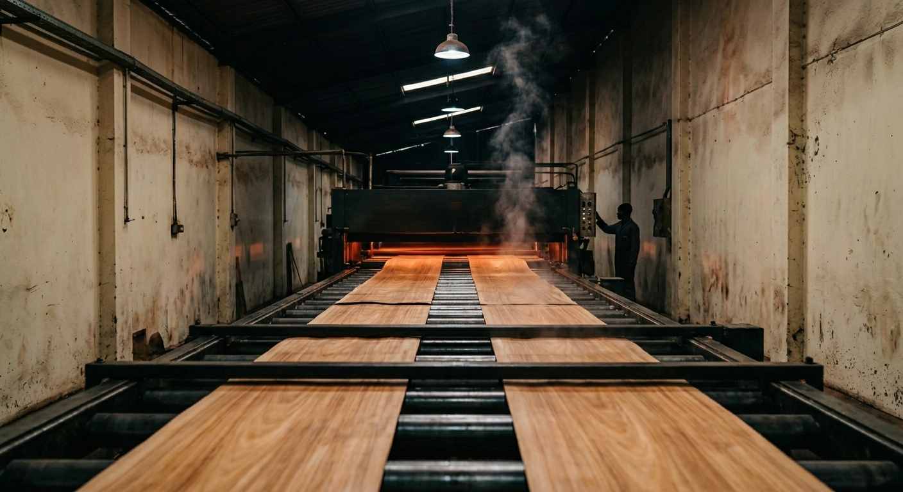
Drying
Machine · Core veneer dryerFresh veneer carries too much moisture to bond. Inside the core veneer dryer, sheets travel through precisely controlled heat zones until moisture drops to the ideal range — the point where resin grips deepest and boards stay permanently flat.
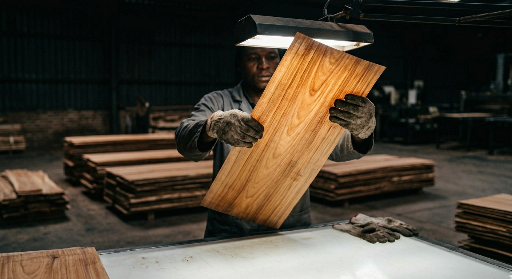
Grading
Manual · Sheet by sheetMachines dry; people judge. Every dried veneer is graded by hand for thickness uniformity, surface quality, splits and patches — then sorted into face and core stacks. A board can only be as good as the worst veneer inside it, so nothing slips through here.
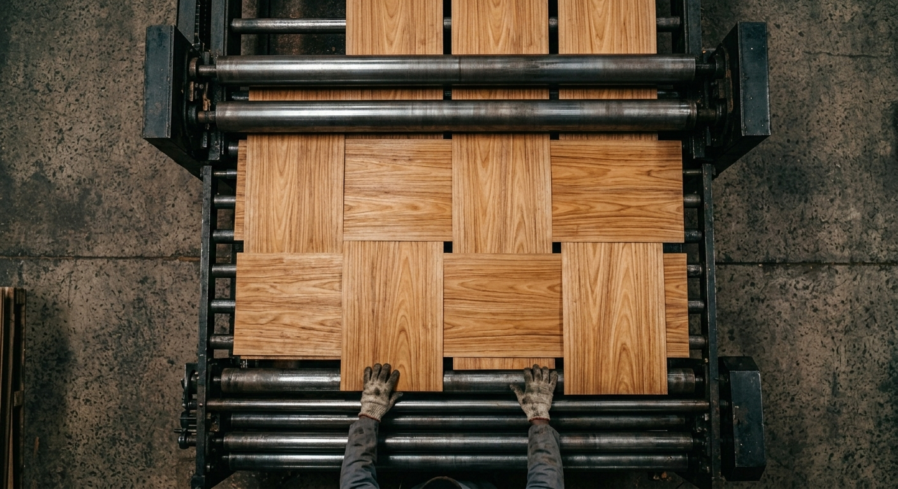
Core Composing
Machine · Core composerSmaller veneer pieces are jointed edge-to-edge by the core composer into full-size core sheets — no gaps, no overlaps. This is what gives the board its solid, void-free interior, and it's the step most cut-price plywood quietly skips.
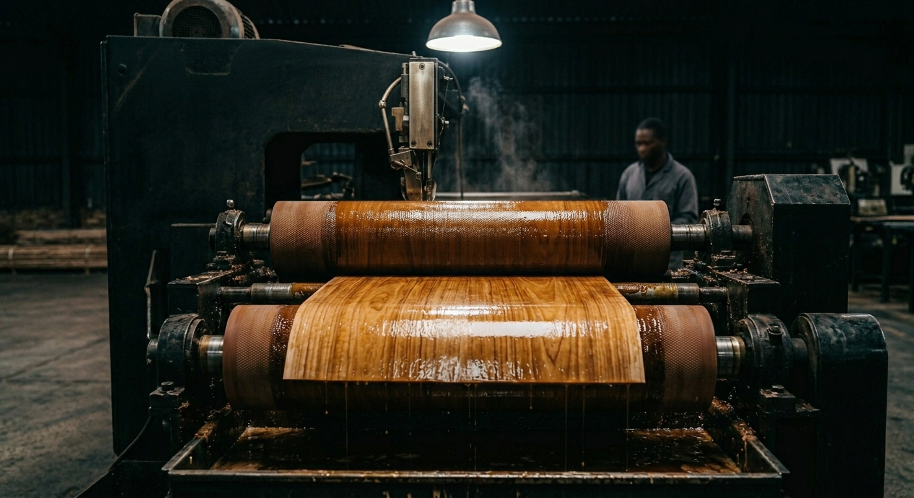
Gluing
Machine · Glue mixer & spreaderResin is batch-mixed in-house and matched to the grade being produced — moisture-resistant bonds for MR, full phenolic for BWR, BWP and Marine. Twin spreader rollers then coat each core veneer evenly on both faces, edge to edge, with no dry patches.
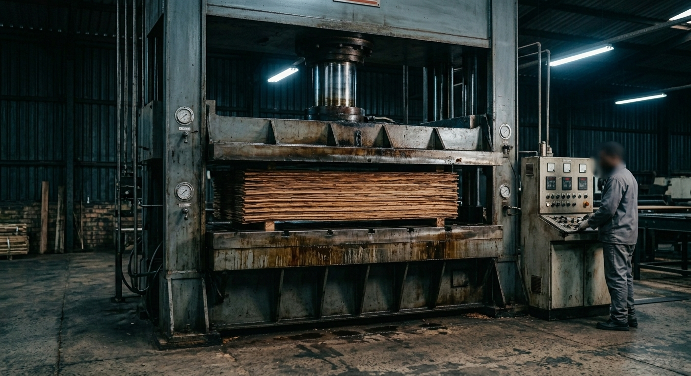
Cold Pressing
Machine · Cold pressThe glued assembly is consolidated under high pressure at room temperature. Cold pressing squeezes out trapped air, seats every veneer in its resin bed and locks the stack in perfect alignment before it meets the heat.

Hot Pressing
Machine · Multi-daylight hot pressHeat and pressure together cure the resin through every bond line, fusing the cross-laid veneers into a single rigid board. Temperature, pressure and time are controlled per grade — this is where plywood stops being layers and becomes structure.
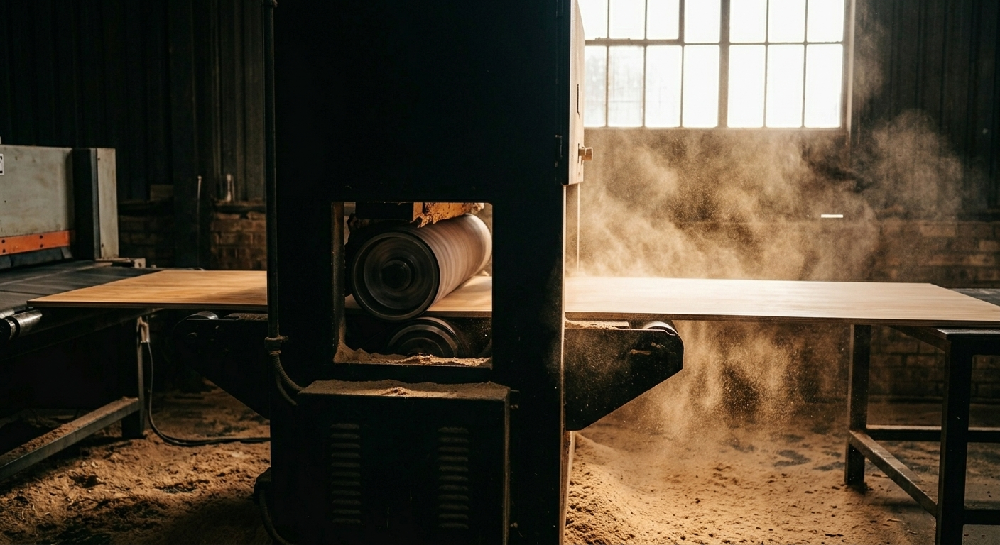
Calibrating
Machine · CalibratorTwin abrasive heads grind both faces of the board simultaneously, bringing the entire sheet to one uniform thickness. Calibrated boards mean your laminates sit flush, your hinges align and your modular furniture actually fits — corner to corner.
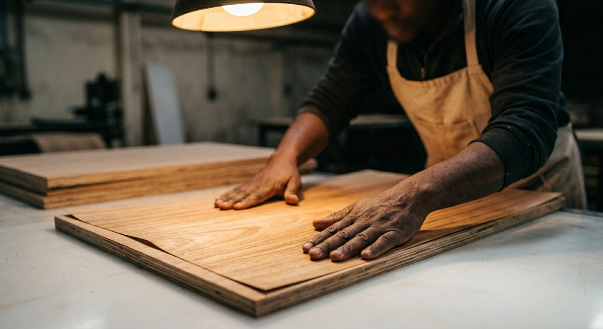
Facing
Manual · Grain-matchedSelected face veneers — the surface you'll actually see and touch — are laid onto the calibrated core by hand, grain-matched and centred. It's slower than automation, and it's why the face looks composed rather than assembled.
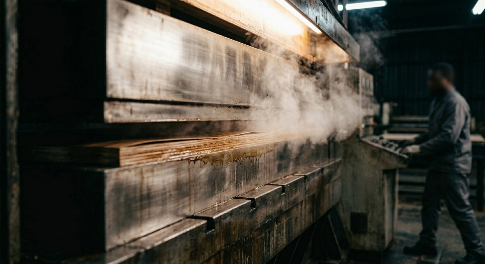
Face Pressing
Machine · Hot press, ~2 min cycleA second, deliberately short hot-press cycle — about two minutes — bonds the face veneers onto the cured core. Short and precise, so the faces fuse permanently without re-stressing the structure underneath.
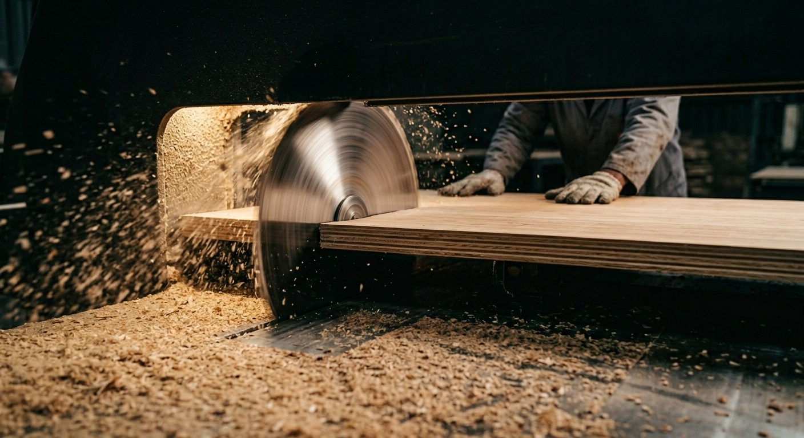
Trimming
Machine · DD sawThe double-dimension saw squares all four edges in a single pass — true 90° corners, splinter-free edges and exact finished sizes. For bulk orders, this is also where custom pre-cut panels are dimensioned.
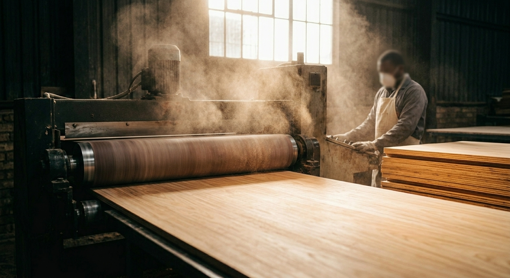
Sanding
Machine · Wide-belt sanderA wide abrasive belt finishes both faces to a smooth, even surface — ready to take laminate, veneer, paint or polish without extra site preparation. What leaves this station already feels like furniture.
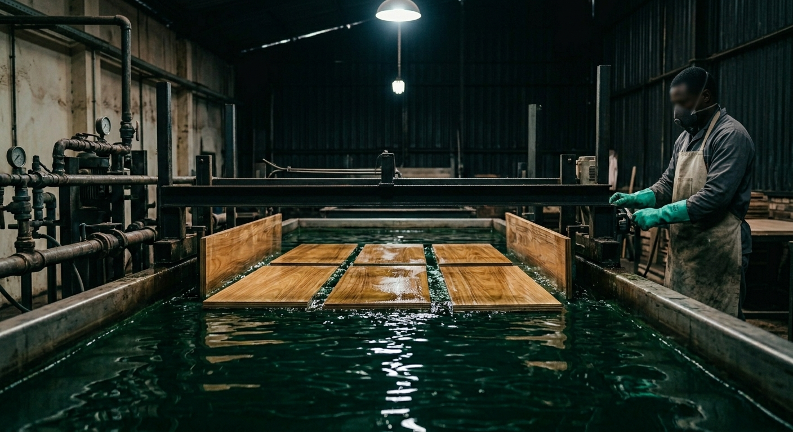
ACC Treatment
Machine · Dipping machineFinished boards are immersed in an ACC preservative bath. The treatment penetrates the board and stays there for life — a permanent chemical shield against borers, termites and fungal decay, not a surface coat that wears away.
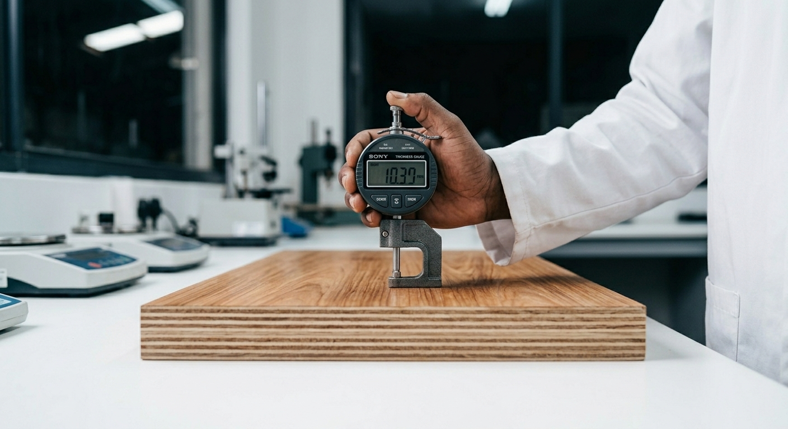
Quality Check
In-house laboratorySamples from every batch go to the laboratory and are tested against IS:303 and IS:710 — moisture content, glue shear strength and water resistance, including the 72-hour boil for BWP and Marine grades. Only when the lab signs off does a board earn the mark.

Machines build the board. People build the standard.
Sixteen stations later, it's ready for your site.
Want to see the line in person, or talk numbers for your next project? Get in touch.
Talk to us →